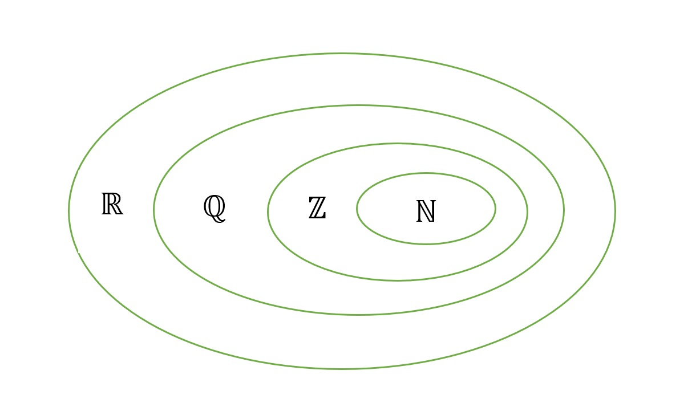

Einführung von Zahlen in der Schule
Wie Kinder zu Zahlen kommen
Zahlen spielen das ganze Leben lang eine essentielle Rolle im Leben eines jeden Menschen. Wie sie in der Schule eingeführt werden und wie die verschiedenen Zahlbereiche erweitert werden ist eine Frage der Fachdidaktik Mathematik.

„Du studierst Mathe? Das könnte ich nicht!“
„Ich habe Mathe schon immer gehasst, aber wenn es dir gefällt…“
So oder ähnlich fallen die Kommentare meistens aus, sobald sich ein Mathestudent vorstellt. Die Mathematik: Viele haben nur Grauen für sie übrig und können sich nach eben dargestellter Konversation maximal zu einem mitleidigen Lächeln durchringen. Aber wieso ist das so? Aus welchen Gründen ist Mathematik so verhasst? Oft sind Schüler von der Mathematik schon früh abgeschreckt. Wer keinen guten Zugang zur Mathematik findet, ist meist bis zum Ende seiner Schulzeit kein Freund der Zahlen und ihrer Anwendung. „Das brauche ich nie wieder.“ Mit dieser Ausrede haben die meisten mit der Mathematik dann für den Rest ihres Lebens abgeschlossen.
Das negative Bild der Mathematik, welches sich häufig schon in den ersten Jahren der Schulzeit entwickelt, sollte also gar nicht erst entstehen. Schließlich müssen viele Auszubildende und Studierende bei ihrem weiteren Bildungsweg doch feststellen, von der Mathematik wieder Gebrauch machen zu müssen. Die Fachdidaktik versucht, schon in der Grundschule eine gute Einführung in die Welt der Zahlen zu bieten und lässt sich dabei von der Geschichte leiten.
Zahlen und Rechnen in der Geschichte
Die Geschichte der Zahlen findet ihre Anfänge bereits in der Jungsteinzeit. In nahezu allen antiken Kulturen bestand ein Zahlen- und Rechensystem, das zur Auszahlung und Berechnung von Löhnen sowie zur Berechnung von materiellen Gütern wie zum Beispiel Getreide verwendet wurde. Sowohl im antiken Ägypten, als auch in Babylon, Griechenland, Indien und China hatte das Rechnen einen hohen Stellenwert und gehörte schon damals zur Bildung einiger Menschen.
Den meisten der antiken Kulturen waren bereits sehr früh die vier Grundrechenarten Addition, Subtraktion, Multiplikation und Division bekannt. Die Mehrheit der Wissenschaftler geht davon aus, dass sich die Addition jeweils als erste Rechenart entwickelte. Ob daraufhin die Subtraktion oder die Multiplikation entdeckt wurde, diskutiert die Forschung bis heute. Vermutlich wurde die Division als letzte der vier Rechenarten entdeckt.
Dass für diese unterschiedlichen Rechenarten verschiedene Zahlbereiche sinnvoll beziehungsweise sogar notwendig sind, war den Menschen früher natürlich nicht klar. Trotzdem entwickelten sich die verschiedenen Zahlbereiche wohl auch so, wie sie heutzutage Schülerinnen und Schülern in der Grundschule beigebracht und erklärt werden, da sie mit der Entdeckung der Rechenarten entdeckt wurden. Zufall?
Verschiedene Zahlbereiche und ihre Einführung in der Schule
Während der Schullaufbahn eines Schülers werden immer schwierigere Rechenarten und Rechenoperationen gelernt. Mit jeder neuen Rechenart wird die benötigte Menge an Zahlen größer:
Für die Addition, die auch in der Schule zuerst gelernte Rechenart, werden zunächst nur die natürlichen Zahlen benötigt. Die Menge der natürlichen Zahlen N beinhaltet alle positiven ganzen Zahlen, zu denen die Null meist nicht gezählt wird. Die in dieser Menge enthaltenen Zahlen sind völlig ausreichend für das Plusrechnen und somit die als erstes verwendeten Zahlen im Mathematikunterricht.
Sobald Schüler jedoch kurz darauf mit der Subtraktion konfrontiert werden, so wird die Erweiterung des Zahlenbereichs zu den ganzen Zahlen Z notwendig. Denn wird eine größere Zahl von einer kleineren subtrahiert, müssen die negativen Zahlen eingeführt werden, um das Ergebnis abbilden zu können. Somit lassen sich neue Probleme und Aufgaben lösen.
Die nächste Rechenart, bei der Schwierigkeiten auftreten, ist die Division. Im Raum der ganzen Zahlen ist die Division sehr eingeschränkt: Während sich Lehrer und Schüler in der Grundschule noch mit „Teilen mit Rest“ begnügen, werden spätestens in der weiterführenden Schule die rationalen Zahlen Q, also Brüche, eingeführt. Diese stellen häufig Schwierigkeiten für einige Schüler dar, weswegen es wichtig ist, sie anschaulich und ausführlich zu besprechen und zu erklären.
Die in der Schule zuletzt eingeführte Zahlenbereichserweiterung ist die zu den reellen Zahlen R. Möchte man die Gleichung x^2=2 lösen, fällt auf, dass die Lösung nicht mit den vorhandenen Zahlen dargestellt werden kann, denn 2 ist weder eine ganze Zahl noch ein Bruch. Zur Lösung werden die reellen Zahlen benötigt, welche zu den schon vorhandenen auch die Zahlen enthalten, die sich nicht mehr als ein Bruch darstellen lassen (= die irrationalen Zahlen).
Die reellen Zahlen R schließen die rationalen und die irrationalen Zahlen ein und sind somit einer der bedeutendsten Zahlbereiche der Mathematik. Für Schüler ist der Zahlbereich der reellen Zahlen zentral, da er nicht mehr erweitert wird und sich das Rechnen in der Schule ausschließlich innerhalb dieser Menge abspielt. Anschaulich gesprochen gehören zu den reellen Zahlen alle Zahlen, die auf der Zahlengeraden liegen. Der Zahlenstrahl ist eine gute Möglichkeit, sich die Bedeutung der Zahlenbereichserweiterungen klar zu machen. Erweitern wir die natürlichen, auf die ganzen Zahlen, so wird unser Zahlenstrahl nach links verlängert. Nehmen wir die rationalen Zahlen dazu, so lassen sich zwischen die ganzen Zahlen beliebig viele Brüche auf unserer Geraden einzeichnen. Doch erst mit den reellen Zahlen wird unser Zahlenstrahl lückenlos, denn zwischen den rationalen liegen unendliche viele irrationale Zahlen.
Zahlenbereiche und ihre Anwendung
Der Zusammenhang zwischen der geschichtlichen Entwicklung der Zahlenbereiche und der Reihenfolge der Erweiterungen in der Schule ist natürlich nicht rein zufällig gewählt. Der Aufbau in der Schule erfolgt logisch nach Schwierigkeitsgrad: Mit jeder Zahlenbereichserweiterung eröffnen sich neue Möglichkeiten schwierigerer Rechenarten. Dies gilt zum Beispiel insbesondere für die Analysis. Ein großer Teilbereich der Schulmathematik beschäftigt sich mit Funktionen. Eine Funktion f ordnet jedem Element eines Definitionsbereiches ein Element eines Wertebereiches zu. Historisch taucht der Begriff erstmals in einem Manuskript von Leibniz im Jahre 1673 auf und wird durch Euler und Dirichlet im 18. Jahrhundert schärfer definiert. Erst Ende des 20. Jahrhunderts wird die strenge rechtsdeutige Relation, wie sie heute bekannt ist, eindeutig festgelegt. So wie sich die Funktionen im Laufe der Geschichte entwickelten, wird auch in der Schule nach und nach eine Vorstellung von Funktionen aufgebaut, indem unterschiedliche Funktionen eingeführt und der Umgang mit ihnen geübt wird: Begonnen wird in der siebten Klasse mit den linearen Funktionen, also den Geraden, wie zum Beispiel y=2x+4. Dann werden Potenzfunktionen eingeführt, also Funktionen, welche mindestens eine Hochzahl enthalten. Die bekannteste dabei ist die Normalparabel y=x2. Später betrachten Schüler rationale Funktionen, die durch den Quotient zweier Polynome charakterisiert sind, deren Nenner nicht Null werden darf: y=1x2 . Zuletzt werden Schüler an die trigonometrische und Logarithmusfunktionen herangeführt, zum Beispiel y=sin(x) und y=log(x).
Die Zahlbereichserweiterungen schaffen uns also einen größeren Funktionenvorrat und man hat die Möglichkeit, eine große Menge an verschiedenen Funktionen einzuführen. Je größer der Zahlbereich, desto mehr Funktionen können wir betrachten. Erst im Zahlbereich der reellen Zahlen können wir einen Blick auf Funktionen wie Potenzfunktionen oder trigonometrische Funktionen werfen.
Idee hinter der Fachdidaktik
Die Forschung der Fachdidaktik beschäftigt sich nun mit der Frage, wie Schüler konkret an Zahlen und somit die Mathematik herangeführt werden können. Denn erste Probleme für die Schüler tauchen meist bei den rationalen Zahlen auf. Für viele Kinder ist dies der Zeitpunkt, bei dem sie in der Mathematik aussteigen. Dies liegt häufig daran, dass es nicht gelingt, Brüche anschaulich zu erklären. Es ist den Schülern nicht klar, dass sie in einen neuen Zahlbereich eingeführt werden und was dies bedeutet. Hier muss die Fachdidaktik einsetzen und Methoden entwickeln, die den Kindern den Einstieg erleichtern. Somit muss sie sich unter anderem die oben aufgeführte Reihenfolge der Zahlenbereichserweiterungen überlegen, um eine Struktur des Mathematikunterrichts festzulegen und einen sinnvollen Aufbau von Wissen zu fördern.
Als Lehramtsstudent stellt man sich häufig die Frage, woher die große Abneigung der meisten Schüler gegenüber Mathematik kommt. Um zumindest schlechten Unterricht und eine ungünstige Didaktik ausschließen zu können, ist die Forschung in diesem Bereich so wichtig.
Zum Weiterlesen
- LANDAU, Edmund: Grundlagen der Analysis, in: Berliner Studienreihe zur Mathematik Band 11, Hrsg. H. Begehr/R. Gorenflo, Heldermann Verlag 2008.
- BRÜCKLER, Franka Miriam: Geschichte der Mathematik kompakt. Springer Spektrum, 2017.
- Bildungspläne des Landesbildungsservers Baden-Württemberg